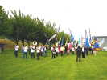
Brie, pas trop loin pour moi, j'arrive samedi matin. La parade en ville se prépare, il fait beau, j'irai déambuler avec ma sterne volant au bout d'une canne. Un bon orchestre nous donne de l'entrain tout au long !...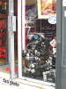
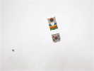
Au retour de la parade, il fait toujours beau (je le redis tant que ça dure...). Dans le ciel, un cerf-volant de la délégation coréenne, semblable avec son trou rond aux combattants du pays, mais avec une traîne stabilisatrice et beaucoup plus grand, quelques mètres...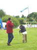
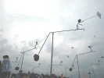
Au sol, on revoit ces esthétiques structures de métal, cette année complétées de pierres qui font contrepoids...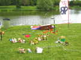
Thierry de retour du Mexique (indemne mais arrêté pour 15 jours !) a planté son jardin en forme de caricature. On y retrouve mon goéland, des charistes à cerf-volant, le cervoliste qui a mis son cerf-volant dans les lignes électriques, etc !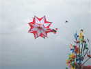
En vol, encore un cerf-volant original, sorte de flocon à 6 feuillets !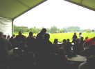
Il est tard dans la matinée, et la parade m'a usé, je ne ressors rien ce matin, et je pars déjeuner dans la grande tente... Progressivement, de petites gouttes apparaissent et finissent par se transformer en pluie abondante et continue ! A 14h30, il tombe toujours des cordes, décision de quitter le terrain vers le gymnase...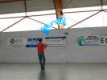
Bon, on va faire de l'indoor. Je sors ma raie Manta. Hugo monte son révo et raccourcit ses lignes... Plusieurs cervolistes suivront avec des modèles légers de pilotables ou de monofils...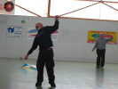
L'indoor est un ballet, et les postures sont aussi importantes que les mouvements des cerfs-volants...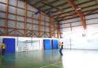
Philippe, le leader de la Cream Team, qui pratique le dual en extérieur, s'y risque en indoor avec de petites lignes... Le plus fort, c'est qu'il y arrive... au moins un certain temps !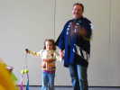
Ceux qui sont restés (quoi faire ?) sur le terrain revolent vers 17 h, le temps s'améliorant... A 20 h, direction le Safran, la même salle que l'an dernier pour le repas rituel. Claude Bova a mis sa plus belle veste en l'honneur des délégations asiatiques...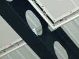
Au plafond, dans les poutres, on retrouve les traces de l'an dernier : une invitation à Vercorin 2008, transformée en flèche, est restée posée là-haut ! Cette année sera plus calme (les invitations sont trop petites pour faire des avions ambitieux...).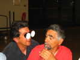
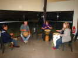
Nous aurons droit à un concert : Djembés avec plusieurs partenaires se relayant. Claude n'est pas le dernier, et même le plus innovant !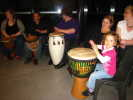
La petite fille a lâché ses boules tournoyantes et a pris d'autorité un Djembé pour participer au boeuf...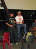
Le fils du Suisse Bernard Clerc nous distraira aussi de quelques solos de saxophone, accompagné de son père qui fait le rythme aux cuillères !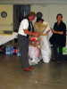
Pour le moment, Jean-Claude est sans souci... Il procède à un tri sélectif et récupère toutes les bouteilles utilisables pour ses jardins !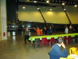
La salle à manger est très grande ! Au son des Djembés, les femmes improvisent une farandole ! Antoinette suit bien. Malheureusement, rentrée à l'hôtel, une mauvaise chute sur le parking lui coûtera le col du fémur... Mes voeux de prompt rétablissement, on veut te revoir bientôt, Antoinette !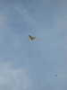
Dimanche matin, après une bonne nuit (sauf pour les Anquier et les Bova qui les ont accompagnés à l'hosto jusqu'à 3 h...), il fait beau. Une guêpe au corps bien tendu survole le parc...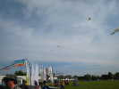
Les Hurricane et les Sens Ciel sont là. Au fond, un immense train coréen (je crois) est déjà monté, droit comme un I !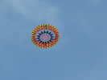
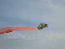
Dans les vents faibles, les pentagones de tout type volent bien...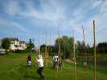
Bruno fait voler sa Demoiselle devant ses harpes éoliennes !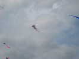
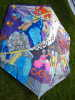
L'Australien William Farber, qui a gagné un prix à Dieppe, a ramené ses Rokkakus, fabuleux monuments de couture...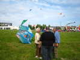
Celui-ci est plus axé sur la nature, la mer et les bateaux...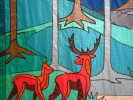
A titre d'exemple un tout petit bout de son cerf-volant qui a dû demander une infinie patience et une grande habileté !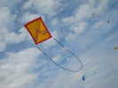
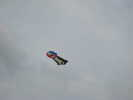
On a remarqué aussi ce cerf-volant asiatique dont je ne connais pas le type... mais il y en a tellement !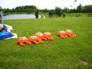
Au sol, une jolie variation sur la structure des coccinelles gonflables, ces crabes aux pinces encore un peu molles à cette heure de la journée !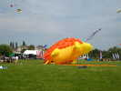
Les Sens Ciel ont lancé Georges, leur hérisson vedette, qui a un peu volé mais mollit plutôt maintenant, révélant son intimité discrètement figurée !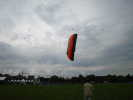
Fredéric Pouillaude joue avec un grand bol qui décolle bien, le vent étant d'ailleurs un peu monté...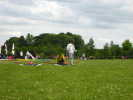
Philippe n'est pas en train de se concentrer avant sa routine, il vient seulement de prendre en pleine tête le pilotable de Jean-Paul à pleine vitesse...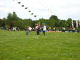
Devant le train de pingouins, que font ces 4 gus sur le terrain, avec l'air de se démener dur pour tenir quelque chose ?...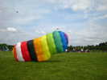
En fait, ils font voler une grande voile ! Celui du milieu pilote un peu, maintenu par son copain pour ne pas déraper, mais les aides de chaque côté tirent aussi sur les freins !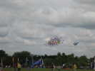
Thierry a sorti et monté courageusement (ça prend du temps...) son Diadème, qui fera quand même un petit vol à la force du poignet...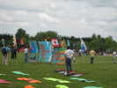
Le Canada va lancer un cerf-volant, un Edo un peu spécial constitué de tableaux (inspiration Canada, bien sûr) juxtaposés sur une grille de Edo classique. Les brides arrière sont un peu trop tendues, mais il volera bien ...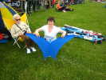
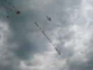
Un membre de Chantilly a monté ce train de petits deltas pilotables... Ils ne sont pas très grands, ont seulement un raccord au nez d'où partent 3 joncs, et de longues queues mais l'ensemble tire d'enfer !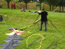
Les longues queues, c'est bien, mais ça rappelle un peu le dragon de Guillaume Nizin : 5 mn de vol, une demi-heure de démêlage !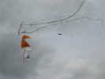
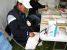
Je fais un petit tour dans les stands. Les coréens fabriquent sans arrêt des combattants, taillant des bambous, collant les papiers, tendant les ficelles... Ils en vendent aussi un peu.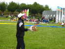
En fin d'après-midi, démonstration de combat réel, avec Manja coupante ! A ma gauche, la Corée avec ses splendides dévidoirs rapides en bois de fer (pour avoir plus d'inertie une fois lancés).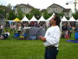
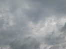
Pour le spectateur, c'est un peu lointain et mystérieux. A gauche le cerf-volant coréen à trou et de grande surface, à droite, l'indien, plus connu...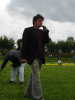
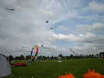
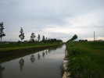
Retour, plutôt que de me coller vite fait dans les embouteillages, je dînerai au calme au bord d'un sympathique canal...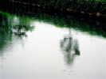
La pluie s'intensifie et fait de jolis ronds dans l'eau. Mais je finirai par être obligé de fermer la porte devant un déluge auquel nous avons heureusement échappé aujourd'hui !